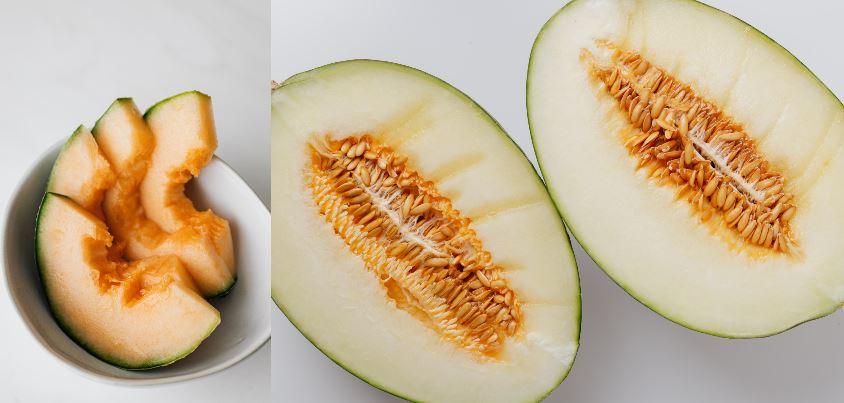

Can Dogs Eat Cantaloupe Rind?
Can Dogs Eat Cantaloupe Rind?
No, dogs should not eat cantaloupe rind. Cantaloupe rind is not toxic to dogs, but the rind contains an enzyme called Bromelain that breaks down protein in the body and is known to cause gastrointestinal distress such as vomiting if eaten by dogs.
Cantaloupe on its own is not toxic to dogs, but removing the rind can be helpful if you have a dog that likes to sneak their food.
If your pet does happen to eat cantaloupe, don't panic, since the fruit itself isn't toxic, there's nothing to worry about other than mild stomach upset.
What is Cantaloupe?
Cantaloupe is a fruit that offers many benefits to dogs and humans alike. Although it is popular for its sweet, juicy taste, it also has medicinal purposes. The fruit contains vitamins A and C, along with beta carotene which acts as an antioxidant to protect against certain types of cancer.
Cantaloupe is also known to help fight allergies such as asthma and hay fever.
Below is a list of the different nutrients found in cantaloupe:- Vitamin A
- Niacin
- Vitamin A
- Antioxidant Compounds
- Choline
- Biotin
- B12
- Phosphorus
- Magnesium
- Potassium
- Manganese
- Iron
- Fat
- Protein
- Sodium
This vitamin is crucial for vision and preventing eye diseases, as well as playing an important role in growth. Dogs will benefit from eating cantaloupe if they suffer from night blindness, eye infections, or even dry eyes.
Niacin helps with anemia by increasing an oxygen-carrying protein known as hemoglobin. It also helps lower LDL (bad) cholesterol levels in your dog's bloodstream and supports a healthy nervous system. Good sources of niacin include meat, liver, poultry, fish, enriched grains and legumes.
Vitamin A is good for skin and eye health as it speeds up the healing process after your dog has been injured or cut himself/herself on something sharp. There has been some research linking higher doses of vitamin A to increased bone density, but researchers aren't sure if this is due to vitamin A itself or because the dogs being tested also had higher amounts of vitamin D or another bone-building nutrient.
Found naturally in many foods, these compounds have researchers excited for their potential to reduce aging-related damage in humans and dogs alike. They're also regarded as a healthy alternative to commercial supplements because they provide a wonderfully complex mixture of vitamins and minerals. The two most important antioxidant families are carotenoids (found in carrots) and flavonoids (found in cranberries). These and other antioxidants work by helping protect cells against the damaging effects of free radicals, molecules which can cause cumulative cell damage that may eventually lead to cancer and heart disease.
Choline will be able to help your dog produce high-quality and properly functioning sperm. It is also essential for the development of a baby's brain, nervous system, and liver. Choline can be found in meat, poultry, fish, eggs and dairy products.
Biotin helps to break down fats, which can help keep your dog's coat healthy. It is also helps promote the body's natural growth of healthy skin, hair and nails.
This vitamin allows for the formation of blood without which your dog can't survive. The substances that Vitamin B12 help form are what make up DNA; this means that it also provides nourishment to your pet's genetic material.
Phosphorus is needed to help your dog's body build strong bones and teeth. It is also needed for growth, energy transfer and maintenance of the nervous system in dogs.
Magnesium is necessary in over 300 biochemical reactions including the formation of DNA. It also supports nerve and muscle functions as well as blood glucose levels, bone strength and protein synthesis.
Potassium is another nutrient that can be found in cantaloupe. This nutrient is beneficial to the heart and can also help regulate blood pressure levels. Potassium can also help with the development and maintenance of lean muscle mass.
This nutrient is important in the process of metabolizing fats, carbohydrates and proteins into energy. Manganese is also important to bone structure, and helps the body metabolize blood sugar.
Iron is responsible for the production of hemoglobin, which carries oxygen in your blood. Dogs do not produce sufficient amounts of iron on their own hence they need to rely on a diet that contains iron sources. Cantaloupe can provide dogs with the iron they need to remain healthy and strong.
Fat helps dogs to maintain healthy heart and skin functions. This means that adding cantaloupe is a great way to add healthy fats to your dog's diet without compromising his overall health.
Protein is responsible for the growth and repair of tissues in the body. Dogs need proper protein to help build muscles, organs, skin and hair. Protein is also essential for a dogs immune system that fights off infections and diseases.
Sodium is a mineral that is necessary for proper body function. It helps transmit nerve impulses and contract muscles. Sodium also aids in blood volume, blood pressure, preventing heart disease and stroke while balancing water levels within the cells of the body.
Health Benefits of Cantaloupe To Dogs
Cantaloupe is low in carbs and high in potassium and vitamin C, making it a great fruit for diabetics. The combination of calcium, protein, phosphorus and magnesium also make cantaloupe an excellent source of bone-building nutrients if your dog has trouble chewing them up as a snack.
Below is a list of some of the health benefits of cantaloupe:- Helps Fight Cancer
- Battles Inflammation
- Promotes Eye Health
- Protects your Dog's Heart
- Improves Sleep Patterns
- Treats Depression
- Promotes Weight Loss
Cantaloupe helps fight cancer by boosting your immune system, which in turn helps fight off cancer cells. It also contains antioxidants that help stop the growth of cancerous tumors and slow down their spread.
The Vitamin C that is so abundant in cantaloupe enhances your body's production of proteins that are needed to protect you against inflammation throughout all areas of your body. This makes cantaloupe a great choice for people who suffer from arthritis, gout or other inflammatory diseases.
Vitamins A and C seldom get good press when it comes to reducing risk factors for heart disease, however both vitamins can help reduce risk factors associated with poor eye health as well. As a result, disorders like macular degeneration and night blindness are less likely to take hold for people who make cantaloupe a regular part of their dog's diet.
Dog's will have increased heart health and circulation when they eat cantaloupe. This is made possible by the vitamins C and A that promote healthy blood vessels (improved circulation) and strong heart muscles.
There are several ways in which an overactive thyroid can disrupt sleep patterns, particularly during periods of hyperthyroidism. One of the most common symptoms associated with this disorder is sleeplessness, but there are more subtle signs as well that food containing vitamins A and C might be able to improve on a regular basis. Cantaloupe contains both of these vitamins, so a dog could potentially have more regular sleep patterns if he eats cantaloupe on a regular basis.
The combination of vitamins A and C also improves the odds that a dog with an overactive thyroid will feel better psychologically. This is important because mild to moderate cases of depression are present in about 20% of patients with this condition, according to some studies. Symptoms associated with depression include fatigue, generalized pain/aches and insomnia (see above) but there may be other symptoms as well, depending on individual circumstances. We know that vitamin deficiencies can lead to chronic depression in humans, so even though it's hard to imagine dogs being depressed by anything short of abandonment or abuse, it might still make sense for them to enjoy the health benefits of dopamine and serotonin by consuming cantaloupe.
Cantaloupe will be able to help dogs lose weight in a couple of ways. For one, the body's metabolism tends to speed up when there is more serotonin or dopamine available. Secondly, as previously noted, cantaloupe has vitamin A and C which are important for a healthy immune system that can fight off all those things that might make you want to eat more than you really need to (that includes fatty foods). Because cancer cells thrive on glucose and fat to sustain themselves, and because cancer tumors use protein as well it makes sense to keep your pet thin so cancer cannot gain a foothold.
Cantaloupe vs other Melons: What's the Difference?
Cantaloupe when compared to other types of melons is that it is actually quite low in sugar, it has less carbohydrate than honeydew and watermelon. More protein than a tomato, more Vitamin C than an orange and more Beta Carotene that broccoli, cantaloupe should be considered as a sweet treat for your dog on days when she have worked hard or maybe to reward her if you catch her being good while you're at work.
Conclusion
The sweet taste of cantaloupe makes it a healthy treat to offer your pets when you need something to distract them and keep them occupied for a while. Since dogs don't have the same capacity for processing carbohydrates that humans do, experts say that they feel fuller on low-carb diets like those containing cantaloupe or other fruits than they would if they were fed grains as their mainstays.
Some people choose not feed cantaloupe to their canine companion because they are afraid it may upset her stomach as it is a melon, but if you choose to give your dog cantaloupe try giving half a cup mixed with yogurt or cottage cheese, this way she will receive all the nutrients without upsetting her digestive system and you don't have to worry about left over peels rotting in your garbage bin.